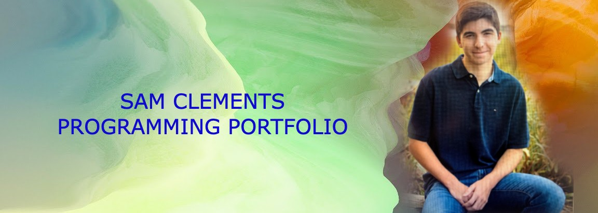

About Me
My name is Sam Clements and I am a sophomore here at URI. I am majoring in film/media and would be happy with any job in the film industry,
but would like to work as a camera operator most of all. I have been involved in camera work here at URI, shooting several athletics events
that have streamed on ESPN.
I have been playing ice hockey ever since I was six years old, and am a big fanatic of the hometown Bruins. I enjoy traveling, and have traveled
all across the country in places such as Hawaii, New York City, Washington DC and the Rocky Mountains.